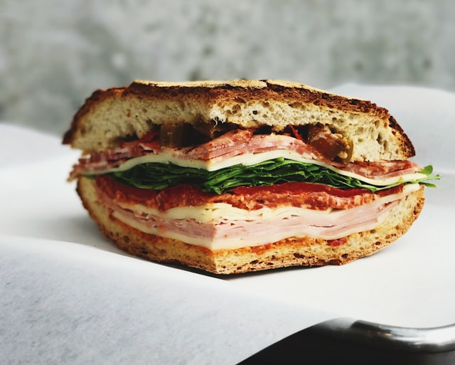
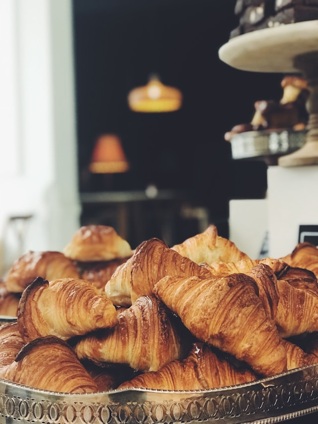
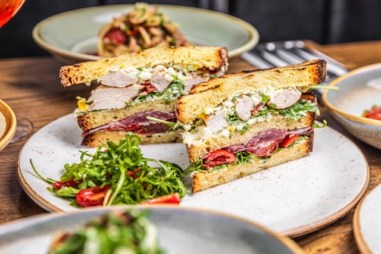
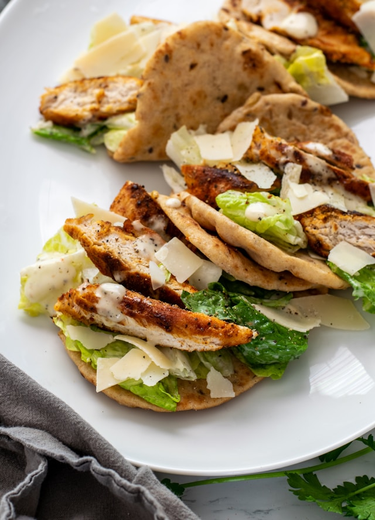
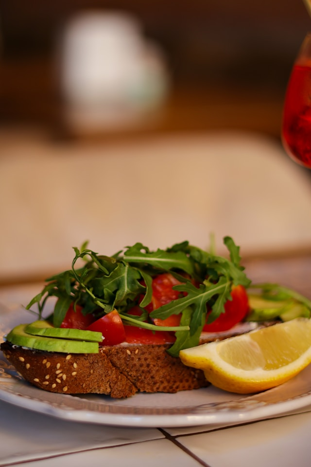
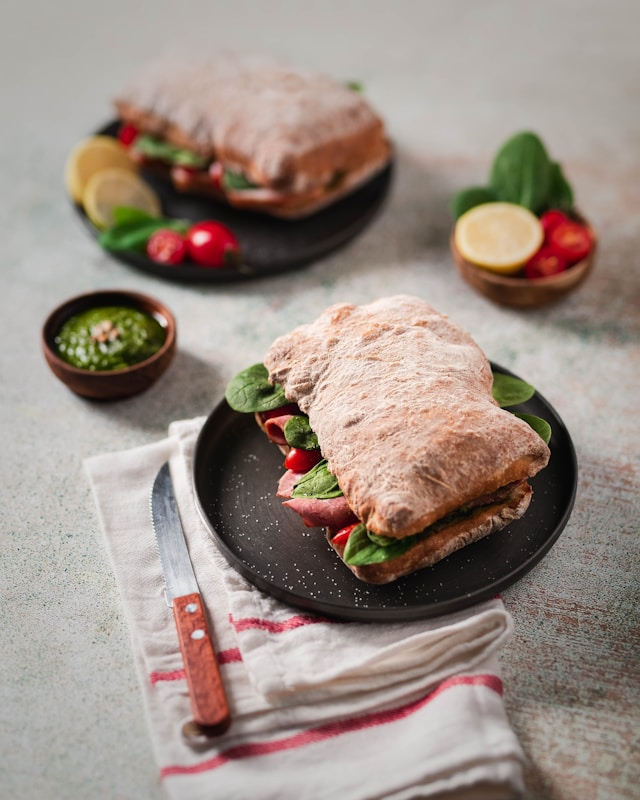

-

뭉치 시그니처 샌드위치
(Mungchi Signature Sandwich)
신선한 치아바타에 그릴드 치킨, 아보카도, 신선한 채소를 듬뿍 넣은 건강한 샌드위치입니다.
한 입 베어 물 때마다 퍼지는 신선한 재료의 조화가 바쁜 일상 속에도 여유와 만족을 선사합니다.
-

트러플 에그 크로와상
(Truffle Egg Croissant)
고소한 크로와상 안에 트러플 향이 가득한 에그 샐러드와 신선한 루꼴라를 채운 고급스러운 메뉴입니다.
진트러플의 은은한 향과 부드러운 에그의 풍미가 입안 가득 퍼지며 특별한 순간을 만들어줍니다.
-

클래식 클럽 샌드위치
(Classic Club Sandwich)
바삭한 토스트에 터키 햄, 치즈, 달걀, 신선한 토마토와 양상추를 층층이 쌓아 올린 정통 샌드위치입니다.
풍성한 재료와 균형 잡힌 맛으로 언제 어디서나 든든한 만족감을 선사합니다.
-

허니 머스타드 치킨랩
(Honey Mustard Chicken Wrap)
담백한 닭가슴살에 허니 머스타드 소스를 더해 또띠아로 말아낸 가볍고 깔끔한 한 끼입니다.
단맛과 짭조름함의 완벽한 조화가 입안을 감싸며, 한 입 한 입 여유로움을 더합니다.
-

비건 아보카도 바게트
(Vegan Avocado Baguette)
바삭한 바게트 위에 아보카도와 발사믹 글레이즈, 신선한 채소를 더한 비건 메뉴입니다.
자연 그대로의 재료가 선사하는 담백함과 싱그러움으로, 건강한 맛을 추구하는 이들에게 어울립니다.
-

스파이시 치킨 치아바타
(Spicy Chicken Ciabatta)
매콤한 양념 치킨과 고소한 치아바타가 조화롭게 어우러진 강렬한 매력의 샌드위치입니다.
입맛을 확 깨우는 매콤한 맛으로, 지친 하루를 힘차게 열어줄 에너지를 선사합니다.